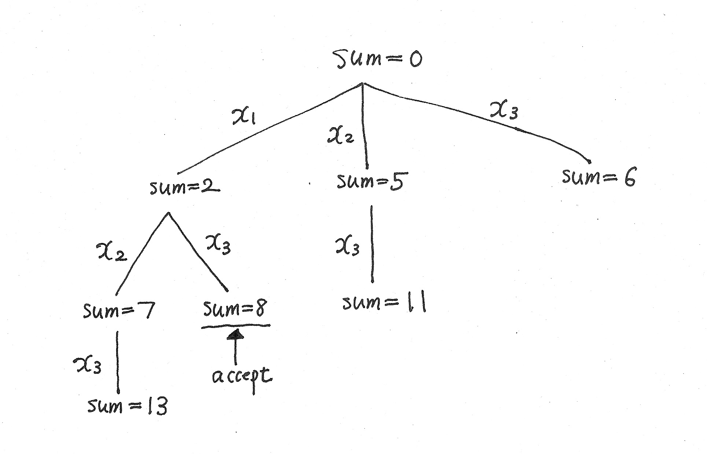
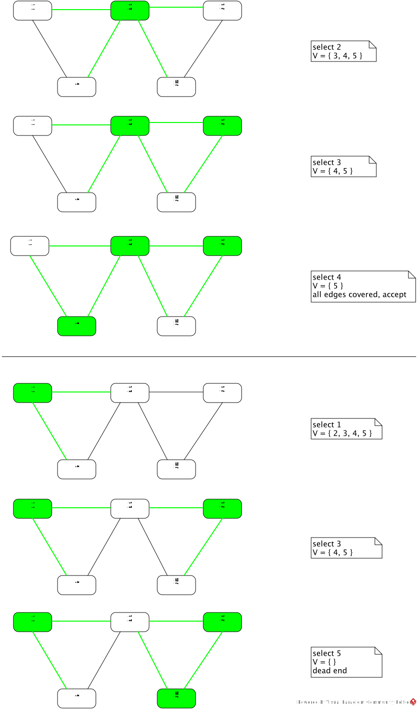

- Scan the input string from left to right and nondeterministically select ("guess") the rightmost symbol of w.
- Starting from the rightmost symbol of w selected in step (i), cross off a matching pair of a's or of b's in inside-out manner by moving the head back and forth. For example, #abaabbaaba would lead to #abaaxxaaba, #abaxxxxaba, #abxxxxxxba, so on.
In sufficient detail, concisely describe a verification TM that is essentially equivalent to this NTM. Describe the nature of a proposed certificate and how it is used.
The proposed certificate encodes an integer k, k ≥ 0, the position of the rightmost symbol of w selected by the NTM in step (i). The following is the verification machine V essentially equivalent to the NTM.
Given input ⟨#x, c⟩:
step 1: Move the tape head to the k-th symbol of x where k is the integer encoded by c; if k > |x|, reject ⟨#x, c⟩. In the special case k = 0, the tape head remains at "#".
step 2: Deterministically simulate step (ii) of the NTM on the input #x.
step 3: If the NTM accepts #x, V accepts ⟨#x, c⟩. If the NTM rejects #x, V rejects ⟨#x, c⟩.
- VERTEX-COVER
- SUBSET-SUM
Your algorithm should explicitly use nondeterministic choices at branching points, not one that generates a proposed certificate nondeterministically. Show that the worst-case runtime of your algorithm is polynomially bounded. You may illustrate the algorithms with help of small examples.
- SUBSET-SUM
Let S = { x1, …, xk } and t be an input.
Algorithm 1 This algorithm makes binary nondeterministic choices for including or not including xi in the subset.i = 1; sum = 0; while ( i ≤ k ) { nondeterministically decide whether to include xi in the subset; if ( the decision is to include xi in the subset ) { sum = sum + xi; if ( sum = t ) accept and terminate the algorithm; } i = i + 1; }If the algorithm terminates without accepting, it has computed a dead-end branch.
Let n be the size of ⟨x1, …, xk, t⟩. One iteration of the while-loop body can be computed in polynomial time O(np). The number of iterations is at most k, which is the number of integers in S, and so k ≤ n. Hence the worst-case runtime is O(k × np) ≤ O(n × np) = O(np+1).
The following is the computation tree on S = { x1=2, x2=5, x3=6 } and t = 8. The edges are labeled by 1 or 0 according as xi is included or not included in the subset.

Algorithm 2 Rather than making binary choices, this algorithm nondeterministically selects one xi from the remaining candidate xj's.sum = 0; S = { x1, …, xk }; while ( S ≠ ∅ ) { nondeterministically select one xi ∈ S; sum = sum + xi; if ( sum = t ) accept and terminate the algorithm; remove all xj s.t. j ≤ i from S; }If the algorithm terminates without accepting, it has computed a dead-end branch. By analysis analogous to that of Algorithm 1, the worst-case runtime is polynomially bounded.
The following is the computation tree on S = { x1=2, x2=5, x3=6 } and t = 8.

- VERTEX-COVER
We can design an algorithm that makes binary choices for including or not including a vertex in the vertex cover, similarly to Algorithm 1 for SUBSET-SUM. Here we only present an algorithm similar to Algorithm 2, which nondeterministically selects a vertex from the remaining candidate vertices.
Let a graph G and an integer k ≥ 1 be an input to VERTEX-COVER. Let v1, …, vm be the vertices of G.if ( k > m ) reject and terminate the algorithm; j = 1; V = { v1, …, vm }; while ( j ≤ k and V ≠ ∅ ) { nondeterministically select one vi ∈ V; mark the unmarked edges incident to vi; if ( all the edges in G are marked ) accept and terminate the algorithm; remove all vh s.t. h ≤ i from V; j = j + 1; }If G has a k'-vertex cover, k' < k, then it has a k-vertex cover since any k − k' redundant vertices can be added to the k'-vertex cover. The algorithm therefore terminates if it finds a k'-vertex cover, k' < k. If the algorithm terminates without accepting, it has computed a dead-end branch.
Let n be the size of ⟨G, k⟩. One iteration of the while-loop body can be computed in polynomial time O(np). The number of iterations is at most k ≤ m, which is the number of vertices in G, and so k ≤ n. Hence the worst-case runtime is O(k × np) ≤ O(n × np) = O(np+1).
The following are an example graph with vertices { 1, 2, 3, 4, 5 }, k = 3, and traces of an accepting branch and a dead-end branch. The selected vertices and the marked edges are shown in green.

Remark Let us recall what we studied in class in the context of this question. The polynomial-time nondeterministic algorithms above can be simulated by deterministic search algorithms utilizing depth-first search, breadth-first search, or their variants incorporating pruning/heuristics/learning techniques. To date, however, no polynomial-time deterministic algorithm for SUBSET-SUM, VERTEX-COVER, or any NP-complete problem has been found. If a deterministic polynomial-time algorithm exists for SUBSET-SUM, VERTEX-COVER, or any NP-complete problem, then by Theorem 6 (2), P = NP, hence all NP problems have deterministic polynomial-time algorithms. If no deterministic polynomial-time algorithm exists for SUBSET-SUM, VERTEX-COVER, or any NP problem, then by Theorem 6 (3), no NP-complete problem has a deterministic polynomial-time algorithm. Which is the case? This is a big open question as of today, although the latter is widely believed to be the case.
- PUZZLE in Problem 7.28 on page 325 (Problem 7.26 in the 2nd edition).
Let n be the number of all possible positions of card holes in either column. Let a1, ..., an denote the n hole positions in left column and let b1, ..., bn denote the n hole positions in right column, left or right relative to the box. We use an assignment A of 0 or 1 to each card Ci so that A(Ci) = 0 means Ci is placed in one way while A(Ci) = 1 means Ci is placed the other way.
A proposed certificate is an assignment A of 0 or 1 to each card Ci, 1 ≤ i ≤ k. The following example algorithm checks if all hole positions are blocked:for each card Ci do cross out the positions of a1, ..., an and b1, ..., bn blocked by Ci according to its placement determined by A(Ci) = 0 or 1; if all positions of a1, ..., an and b1, ..., bn are crossed out, accept, else reject;Crossing out one position ai or bi can be done by sequential scan of the n positions in a column of Ci, and hence takes time O(n). Hence the runtime for one iteration of the for-loop body is O( 2n × n ). The for-loop iterates k times, thus the total runtime is O( 2n2 × k ).
In the above analysis, we assumed n is a variable implicitly given as part of the input. The description of PUZZLE as given in Problem 7.28 might suggest that n is a constant and the input size is measured only by the number of cards k. In this case, the runtime reduces to O(k).
- 3COLOR in Problem 7.29 on page 325 (Problem 7.27 in the 2nd edition).
A proposed certificate is an assignment of three colors to the nodes of an input graph. The verifier checks if no two adjacent nodes are assigned the same color. This can be done in O(E) time where E is the # of edges in the input graph.
- The final exam scheduling problem in Problem 7.31 on page 326 (Problem 7.29 in the 2nd edition).
We number h slots by the integers 1, 2, ..., h, and use the notation slot-number(Fi) to denote the integer assigned to final exam Fi.
A proposed certificate is an assignment of an integer j, 1 ≤ j ≤ h, to each final exam. The verifier checks if any student is taking two exams in the same slot. This can be done, for example, by the following algorithm:for each student Sm do for each pair of distinct exams (Fi, Fj) to be taken by Sm do check if slot-number(Fi) = slot-number(Fj)The # of iterations = O(l × k2), which is a polynomial of l = # of students and k = # of final exams.
- The KNAPSACK problem defined as follows.
Input: an integer C > 0 (the capacity of the knapsack), integers si > 0, 1 ≤ i ≤ n, (the sizes of n objects), integers pi > 0, 1 ≤ i ≤ n, (the profits of n objects), and an integer B > 0 (a total profit boundary)
Output: decide if there is a subset { k1, …, km } ⊆ { 1, …, n } such that sk1 + … + skm ≤ C and pk1 + … + pkm ≥ B.
A proposed certificate is a subset { k1, …, km } ⊆ { 1, …, n }. The verifier checks if sk1 + … + skm ≤ C and pk1 + … + pkm ≥ B. This can be done in polynomial time of n.
- A version of traveling salesperson problem, DIRECTED-TSP, defined as follows.
A directed graph with edge cost is one where each edge e is associated with a nonnegative real number c(e) called the cost of e. The cost of a path p = (e1, ..., en) of n edges is defined to be the sum of the costs of the edges c(p) = c(e1) + ··· + c(en).
Input: (G, s, t, B) where G is a directed graph with edge cost, s, t are two nodes in G, B is a nonnegative real number (a total cost boundary)
Output: decide if G has a Hamiltonian path p from s to t such that c(p) ≤ B.
Let n be the # of nodes in G. A proposed certificate is a path p in G. The verifier checks if p has exactly n nodes, starts from s and ends in t, visits each node exactly once, and c(p) ≤ B. This can be done in polynomial time of n.
Given a SUBSET-SUM input S = { x1, …, xn } and t, the reduction produces the KNAPSACK input: si = pi = xi, 1 ≤ i ≤ n, and C = B = t. This KNAPSACK input has 2n+2 integers and can be produced in polynomial time of the size of < S, t >.
Proof of Equivalence Condition Suppose that there is a subset { k1, …, km } ⊆ { 1, …, n } s.t. xk1 + … + xkm = t. Since si = pi = xi, 1 ≤ i ≤ n, and C = B = t, sk1 + … + skm = C and pk1 + … + pkm = B. Hence, { k1, …, km } satisfies the conditions of the KNAPSACK problem.
Conversely, suppose that there is a subset { k1, …, km } ⊆ { 1, …, n } such that sk1 + … + skm ≤ C and pk1 + … + pkm ≥ B. Then x